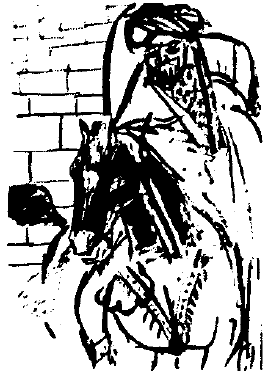

Suat Ferid geniş yatağında kıvranıyordu. Ne olduğunu bilmez değildi. Biliyordu: Uyanmaya çalışıyordu. Bu nedenle de zihninde uyanan “Gondiwahara mağarasında ebesiz ve annesiz dogmaya çalışan şeyh” görüntüsüne pek önem vermedi. Bu nasıl olsa kendi tahayyülatının bir ürünü, yazmaya çalıştığı romanın daha önce düşünülmüş bir örüntüsü idi. Uykuda olmasına rağmen, bunu bilmenin verdiği güven duygusu, beş duyusunun verdiği aşırı gerçeklik hissini dengeliyor, sayıklamasını veya bağırmasını engelliyordu. Onun için, bir noktadan sonra uyanmamaya ve bu rüyayı kendi doğal akışında sonuna kadar yaşamaya karar verdi. Hele kaçmaya hiç kalkışmadı. Böyle yaparsa beyni, bacaklarına “kaç" emri yerine “ayağa kalk" emri vererek belki ufak bir felaketin olmasını engelleyecek, fakat rüyanın sonunu da göremeyecekti. Merakı ağır basmıştı. Şimdi uyanıp rüyanın kalanını tasavvur etmektense hepsini yaşamak daha iyiydi.
Gözleri kocaman kocaman açılmıştı. Odasını saydamca bir perde arkasından, belli belirsiz görebiliyor, eşyaları ancak seçebiliyordu. Bir anlamda, o su damlasının içine hapsolmuş iki devasa ordunun durumundaydı. Kendisini kuşatan zar yine öyle esnek, yine öyle güçlüydü... Yalnız, kubbe şeklinde değildi. Tüm vücudunu bir elbise gibi sıkı sıkıya sarmıştı. Üstelik tek başınaydı ve bu yalnızlığı paylaşacak başka bir şey de yoktu. Ayrıca an uzayıp gitmiyor, bu dalıp gitme hali Suat Ferid’e mayhoş bir zevk vermiyordu. Çünkü herhangi bir trans söz konusu değildi. Bilakis, zamanının daraldığını düşünüyor, havasız kaldığını, bir an önce bu tuhaf doğum kesesini yırtarak çıkmak gerektiğini anlıyordu.
Çırpınmaya, debelenmeye başladı. Denetimi yitirmek üzereydi. Güçsüzleşiyordu... Vazgeçti bu rüyanın sonunu görmekten. Plasenta olarak algıladığı şey, battaniye ya da çarşaf olsa gerekti. Uyanınca üzerindeki örtüyle nasıl sarmaş dolaş olduğunu görüp gülümseyecekti. Ama bunu yapmak için önce uyanmak gerekti. İşte bunu yapamıyordu.
Beynine kaç emri verdi. Bunun sonucu, yarı beline kadar yataktan doğrulup döşemeye yuvarlanması oldu. Artık bu rüyaya müdahil olmanın güçlüğünü tamamıyla kavradı. Rüya neyi gerektiriyorsa yapmak, mesela sivri bir şeyle bu ıslak ve kaygan keseyi delmek gerekiyordu. Ama bu mümkün değildi, çünkü kesesinin içindeki Suat Ferid, anadan doğma bir haldeydi, elinde ok veya kılıç yoktu. Bu kahrolası kâbusta da tahayyül etme yoluyla bunları edinemiyordu... Halının üzerinde kıvranıp yuvarlanırken bilincinin bulanıklaşmakta olduğunu, neredeyse bitaraf bir gözle müşahede etti. Başını, kuştüyü bir yastığa uzatır gibi yavaş yavaş yere koydu. Başının altında bir kabartı hissetti, yastık değil de daha küçük, daha sert bir şey.
“Melek Bey Oğlum”un öpücüğünü her an beklerken epeyce hırpalanmış olsa da, Suat Ferid’in bilinci, bunun gece yatağın yanına bıraktığı not defteri olduğunu, içinde de mutâdı üzere bir kurşunkalem bulunduğunu tahattur etti. Kafasıyla, burnuyla darbeler vurarak kalemi düşürdü. Kesesinin izin verdigince, eliyle kalemi kavradı. Güçsüz kolunu yüzüne dek kaldıramadı. Karın boşluğu veya kaşıkları hizasında bir yerlerde kesesine batırdı... Esnek nesne bir süre direndikten sonra kaleme teslim oldu. Suat Ferid kalemi geri çekerken, hafif bir fısıltı işitti. Bu da duyduğu son şey oldu zaten. Yan dönmüş ve fasulye gibi kıvrılmış bir haldeyken kendini derin bir karanlığın kollarına bıraktı;
“Yapamam, yitmiş bir bilince hiçbir şey yapamam, bilinç bunu bilmiyor mu bilinç?”
Saatler sonra yorgunluk ve perişanlık içinde uyandı. Kurşunkalem plasentanın kıvranmalar sırasında gerilen bir noktasını delmiş, kendi çapından çok daha büyük bir delik açmış, oradan giren hava, yaşamasını sağlamıştı. Bu sefer elini içerden bu deliğe taktı ve pek zahmetsiz bir şekilde keseyi boydan boya yırtarak kendini bu yumuşak cendereden kurtardı.
Birkaç dakika sonra çıplak bir vaziyette ayakta durmuş, inanmaz gözlerle, yerde şekilsiz bir yığın gibi duran, fakat bir tarafından tutup kaldırsa epeyce bir Suat Ferid kalıbını andıracak plasentaya bakıyordu. İlk düşündüğü şey, “kalem hakikaten de kılıçtan keskinmiş” oldu. Sonra da büyük bir nankörlükle, hayatını kurtaran, hem ebesi hem velinimeti olan kaleme küfretmeye başladı. Ne halt etmeye o mağarada doğan şeyh kısmını yazmıştı kalem? Ayık bayık bir bilinçten bu kadar işte, diye düşündü sonra utançla. Kalem kendisi yazıyor değildi ya! Suat Ferid emrediyor, o da bir levh-i müpheme yazıyor ha yazıyordu.
O haldeyken, açık vaziyetteki not defteri gözüne ilişti. Gece ne yazdığını da hatırlamıyordu. Beyaz sahifelerde kahverengimsi izler bırakan kirli parmakları ile defteri kavradı. Ne yazacaktı? Tabii ki büyük bir romancının doğuşunu yazıyordu. Kendisinden tiksinerek duşa gitti. Büyük ve şiddetli bir catharsis dürtüsüyle yıkandı, yıkandı...
O bir Tırnakçı Utarid değildi. Bu şekilsiz yığını ne yapacağını bilmiyor ve tutmak bir yana, onu görmeye bile tahammül edemiyordu. Duştan çıkarken yeni bir korkuyla sarsıldı. Ya bir tür tepegöz veya kiklop haline dönüştüyse? Aynaya koştu... Derin bir nefes aldı. Her iki gözü de yerli yerinde duruyordu.
Tekrar eski sorununa döndü. En iyi çözüm, kimseye çaktırmadan bu şeyi şehir dışında için için yanıp duran çöp dağlarından birine atmaktı, öyle de yaptı. "Can çıkar huy çıkmaz" fehyâsınca oradaki zavallı insanlara açıklamalar yaptı. Sanki soran eden varmış gibi... Adağı varmış, kurban kesmişler de maalesef hayvan gebe çıkmış da, mış ve mış...
Dönüş yolunda, yazdığı roman hariç, bundan hiçbir yerde hiç kimseye bahsetmemeye karar verdi. Oradaki perişan tiplerden Osman Ferdi bu deneyimi yaşamış, ağırlığım kaldıramamış ve hafızasını pekâlâ bu hadiseden sonra yitirmiş, bilyeyi böyle zıplatmış olabilirdi. Nasıl? Osman Hulûsi Beyefendi Ağa’nın epey önceleri –geçen asır mıydı?– verdiği nasihatleri silmiş görünüyordu.
Anette Belçika’ya gideli aslında bir hafta on gün ya geçmiş ya geçmemişti. Suat Ferid, kapının önünde nöbet tutan gazeteciler usanıncaya kadar beklemiş, bu arada boş durmamış, gazetelerin “satılık emlak Avrupa yakası” ilanlarını, hatim indirircesine okumuş; hepi topu dört satırlık bir ilanda “Boğaz’da, koru içinde sahibinden ehven, iradlı” diye tarif edilen bu eski ahşap evi satın almıştı. Benzerlerinin aksine gerçekten de bir korunun, son derece bakımsız, vahşi bir tabiat parçası haline gelmiş bir korunun içindeydi evi. Sahibinin paraya sıkışık olduğu, verdiği ilanın kısalığından bile belliydi.
Birikmiş tüm parasını ve üstüne Ulus’taki mezar-evi verince, aniden bu harabenin sahibi oluvermişti. Hem bir an önce Ulus’u terk etmek istediğinden
[Ne demek ulusu terk etmek? Bu kadar da gevşemedik, İ.K.] hem tamir için parası kalmadığından hem de maceraya meyyal bir hali olduğundan, bir gün içinde tebdil-i mekân eylemişti. Tebdil-i zarf hadisesi de burada oldu. Mazrûftaki tebeddülât ise şimdilik kendisine bile açık değildi. Evin akmayan tek yeri olan zemin katına yüzlerce kutu kitabını ve bazı eşyalarını koymuş, kendisi de yine aynı yerde bir odacığa yerleşmişti. Diğerleriyle karışmasın diye Duvduvani’yi çantasının içinde tutuyordu.
Bu değişikliğe en fazla sevinen Fendi’ydi. Sabahları çıktığı eve ne zaman döndüğü belli bile değildi. Hazır mamalara itibar etmeyişine bakılırsa, daha lezzetli yiyecekler buluyor olmalıydı. Kedi dediğinin bıyığından kan damlamaz ki! İkisi, birbirinin nasırına basmadan yavaş yavaş yeni bir hayat kuracaklardı herhalde.
Suat Ferid’in geçirdiği değişim, basit bir deri değiştirmenin çok ötesindeydi. Bazen, yaşadığının bir rüya olduğunu düşününce hemen not defterine koşuyor ve parmaklarının bıraktığı izlere bakıyordu. Sonra kendi kendine gülümsüyor,
“Tam eski benlik bir davranış, neyin kanıtını arıyorum?" diyordu.
Belki hâlâ biraz hamlık vardı ama Suat Ferid de kendi yolunda, kendi halince yürüyerek pişiyordu. Aslında her şeyden –belki yeni bir doğuş dahil olmak üzere her şeyden– fazla da bundan korkuyordu. Pişmek ve sertleşmekten. “Pişmiş toprak bir daha çamur olmaz” sözünü diline dolamış, sık sık yineliyordu. Sözün kendisine ait olup olmadığını bile kestiremiyordu. Sanki bir yerde, bir tabelada görmüş gibiydi.
Avanos Testiciler Kooperatifi’nin yönetim binasında mı görmüştü? Cümlenin başında bir de “Efendiler” mi vardı? Hatırlamıyor ama pek de umursamıyordu. Yavaş yavaş, hayatın her veçhesi üzerine bir vecizeler külliyatı oluşturduğunu keşfediyor, bunun pişmenin, katılaşmanın ta kendisi olduğunu hissettiği zamanlar da, garip bir hüzne kapılıyordu. Zihninin bir köşeciğinde kızıl saçlı, küçük bir Suat Ferid, “ben katılaşmak istemiyorum, ben hep çamur kalmak istiyorum" diye çığlıklar atsa da, süreç başlamıştı. Diğer romancı kardeşlerine ve epey bir kısım müteverrihana ise, acıma ve şefkat dolu gözlerle bakmaktan kendini alamıyordu. Şu son zamanlarda bir tabur oluşturacak kadar kalabalıklaşan buncağızlar, Osman Hulûsi’nin gözleriyle görmeseler de, maşallah, nasıl da “iyi” biliyorlardı geçmişi ve geçmiş yaşamları! Bilmekle kalmıyor bunu fedakârane başkalarıyla da paylaşıyorlardı... Bazıları, bu fedakârlığı iyice uç noktalara götürmüşlerdi, bir yandan okuyor öğreniyor bir yandan irşad ediyorlardı. Hemen hemen eşzamanlı bir süreçti bu.
Acıma ve şefkatle bakıyordu, çünkü kendisinin yazdığı, o adı değişen Selanik paçavrası da hâlâ baskı üstüne baskı yapıyordu. Bir hafta geceli gündüzlü çalışarak ve tek bir kitap okuyarak yazmıştı o romanı. Biliyor ve utanıyordu. Yoğurt esprisi de kim bilir nereden yürütmeydi? Ya yurt günlerinden ya başka bir yerden... Seyrettiği bir “Alaman" pornosunun, zihninde memleket şartlarına uyarlanmış hali bile olabilirdi. Kitaba verilen ilkel tepkiler, kitabın kendisinin de pek gelişkin olmadığı gerçeğini silemezdi ki...
Bir gün tüm cesaretini toplayarak çantasından Duvduvani’yi çıkardı. Ailesinde aktarılagelen “Peynircizade” geleneğinden başka hiçbir şey yoktu içinde. O da Suat Ferid’in olduğu hemen anlaşılan bir elyazısıyla, yeni harflerle yazılmıştı. Osman Hulûsi’nin sözlerini hatırladı. Elinin ilk erdiği kutuyu açtı. İlk kitabı çekip aldı.
İşte o an, Osman Hulûsi’nin dünyasının nasıl sert, acımasız, yalın, yalçın ve çıplak bir dünya olduğunu anladı. Kapakta, kitabın yazarının, soyadı olmaksızın yalnızca adı vardı. İç kapakta basım yeri ve yılı bulunuyordu. Sayfalar numaralıydı. Fakat yer adları, birtakım bağlaçlar, zamirler, sıfatlar sayılmazsa, kitap bomboştu.
Başka birini daha denedi, hemen hemen aynı şey. Onlarca kitaba baktı: Hep aynı şey. Tabii ufak tefek farklar vardı. Bazı kitapların yazarları hiç belli değil, bazılarında basım yılı ve basım yeri gibi rutin olması gereken bilgiler bile yok! Heyecanla bir gazete buldu. Orada da aynı şey: Zülf-ü yâre dokunan konular bir yana, üçüncü sayfanın günlük hayatla ilgili haberleri bile bir güve tarafından kemirilmiş gibiydi. Tipik bir haber şöyle okunuyordu:
“Adliye’de ……….. her iki taraf ………. ederek birbirlerine …………”
Hangi duygunun itmesiyledir bilinmez, bir de roman “okumaya” karar verdi. Kendi romanının çeşitli baskılarının durduğu kutuyu arayıp buldu. Bir nüsha aldı. İlginç bir şekilde adı okunuyordu: Özgürlük Güneşi Yakar.
İçine baktı. Durum zannettiğinden çok daha iyiydi. Bazı sayfalar neredeyse tamamen doluydu. Anlamaya çalışarak kitabı inceledi. Tek tük boşlukların Selanik, İstanbul gibi yer isimleri, veya bir kulp takamadığı “Server veya Piyazi” gibi gerçek şahsiyetlerin isimleri olduğunu fark etti. Sayfa numaralan da yoktu.
Koltuğuna oturdu. Demek ki farklı türden yazılar için farklı ölçütler kullanılmıştı. Romanlarda, yani “uyduruk” metinlerde, uyduruk olmayan her şey sırra kadem basmıştı. Roman olmayan metinlerdeyse durum tersiydi: Aşikâr yalanlar, uydurmacalar, yanlış çıkarsamalar ve referans vermeden başkasından yapılan alıntılar, tüm araklamacalar toz olmuştu... Gülerek, hafif bir kıskançlık ve intikam duygusuyla, eserleri çok satılıp çok okunan romancı kardeşlerinden birinin son kitaplarından birini arayıp buldu. Birkaç şahıs adı hariç, hiçbir şey yoktu:
“Biliyordum, ah biliyordum... Hep içimde bir şüphe, senin zaten roman yazmadığını söylüyordu... Tabii ki öyle... Demek ‘üslubunu düzelterek okura sunuyorum’ ayağı ile başkalarının eserlerini talan edip duruyordun, seni çakal!”
O gece bütün kitapları kutulardan çıkararak, sırtları yukarıya gelecek ve yan yana uzun sıralar oluşturacak şekilde evin tabanına dizdi. Gülerek, eğlenerek herkesin yazdıklarına bakmaya başladı. Pek komik şeyler oluyordu doğrusu: Eski Yunan’dan taa günümüze ismi yaşamış, eserleri okunan, pek çok dile çevrilmiş filozofların eserlerine bakıyor, gülmekten yerlere yatıyordu. Birinde, okunabilen tek kelime, “Atlantis”ti! Saatler süren bu eğlenceden sonra yavaş yavaş durumun vahametini kavramaya başladı.
Hayat aniden çok zorlaşmıştı. Hem teorik hem pratik zorluklar diz boyuydu. Mesela, sayfa numaraları gerçek diye, hiçbir romanda sayfa numarası yoktu. Kendisi gibi bir zat, numarasız sayfaları karıştırmaz mıydı? Buyrun bakalım? “Allah’tan benim gibi olan çok adam yok, dizgiciler görüyordur numaraları" diye düşündü. Yazmakta olduğu yeni romanına koştu. Keratanın bilgisayarda bile sayfa numaraları yoktu. Bir iki kez zavallı alete “filan sayfaya git” komutu verdi. Yazdığı sayılar anında silindiği için bilgisayar hiçbir yere gidemiyordu. Üşenmedi, bir çıktı aldı. Sırasında tutarsa bir sorun yoktu. Ama üzerinde hiç rakam olmayan yüzlerce sayfayı sırada tutmak pek zordu. Başka hiç kimseyi ilgilendirmemesine rağmen, saatlerini bu soruna çözüm aramakla geçirdi.
Sonunda, her büyük keşifte olduğu gibi tesadüf hazretleri burada da imdada yetişti. Kısa bir süre önce hayatını kurtaran kurşunkalemiyle yazdığı rakamlar, biraz dayandıktan sonra siliniveriyordu. “Belki ikna ederim” diye, bunu onlarca kez yineledi. Bir ara, o kadar dikkat ettiği halde romanın masa altına düşen ilk sayfasını fark etmeksizin, ikinci sayfanın üzerine (1) yazdı. Bu sayı silinmedi, kaldı... Sonra devam etti. Onlar da kaldı! Yerdeki sayfaya dikkat ettiği zaman durumu anladı. Rakamları bile uydurmanın yolunu bulmuştu... Yerdeki tek sayfayı aldı üzerine dikkatle (99) yazdı. Olmuştu.
“Aman canım, buradan başlasın. Doksan dokuza gelince de iki yazarım olur biter” dedi kendi kendine.
Bir sonraki düşüncesi, biraz önce yaşadığı zorluğun ilerdeki muhtemel zorluklar yanında çocuk oyuncağı gibi kaldığı oldu. Hem çok güçlüydü hem çok zayıf: Yalan ifadeleri ortaya çıkararak polisimize yardımcı olabilir, uluslararası görüşmelerde karşı tarafın yalanını yüzlerine vurarak diplomasi denen nesneyi tarihe gömebilir, politikacıların hassas ruhlarını incitebilir, ticaret denen uğraşın derin bir rahne almasına neden olabilir, hele gençlik günlerinin ekmek teknesi olan reklamcılığın tahtalıköyü boylamasını garanti edebilirdi... Ürperdi: Ya evlilik müessesesi, ya eğitim yuvaları? Ya din? Kalkıp arandı, en kalınlarından bir kutsal kitap buldu. Aile geleneği ateizmden pek kopamadığı için, hiçbir şey bulamama önyargısı ile açtı. Şaşkınlıktan küçükdilini yutacaktı. Yer adları dışında hemen hemen tüm metin, olduğu gibi duruyordu. İki ihtimal vardı, bir üçüncüsü yoktu: Ya bu kutsal kitapta yazan her şey doğru, fakat kitabın coğrafyası fena halde yanlıştı. Ya da bu bir romandan başka bir şey değildi...
“Canım ben teolog muyum? Tarihi coğrafya uzmanı mıyım? İkisi de olabilir” dedi.
Fakat her iki durumda da, Kuduşa kenti için birbirlerini tüketen insanlara acıdı. Eğer kitap doğru, coğrafya yanlışsa, artık kaybolmuş, mevcut olmayan bir kent veya yanlış kent için didişiyorlardı. Yok kentin adı ve yeri doğruysa, sırf bu kadarcık gerçek için acaba boğazlaşmaya değer miydi? Diğerlerine bakmaya artık cesaret edemedi.
Düşündükçe, dağınık düşüncelerini toparladıkça iyice yeise düştü Suat Ferid. Uyduruk kitaplar bilgiyle doluydu. Uydurma olmayan kitaplarıysa sanki fareler kemirmişti. Fizik, astronomi, biyoloji ve hatta hatta matematik kitaplarında bile dehşetli gedikler vardı. Öte yandan, bazı postmodern kitaplar malumat ile lebâleb mülemma idi. Dolayısıyla çok fonksiyonelmiş gibi görünen bu ciddi kitap-uyduruk kitap ayrımı, bir noktadan sonra tamamen anlamım ve işlevini yitiriyordu. Ciddi kitaplarda dişe dokunur bir metin görülmüyor, uyduruk kitaplarda ise pekâlâ bir metin görülebiliyorsa, acaba bunların hangisinden bir şeyler öğrenebilirdi insan?
Şu anda, şu bulunduğu düzende kendisi toz zerresi kadar bir azınlık, insanlık ise devasa bir çoğunluktu. Osman Hulûsi’yi saysa bile, durum değişmiyordu. Ama başka bir düzende, mesela kendisi gibi olanların kahir ekseriyette oldukları bir yerde, her şey tersine dönecek, maazallah-ü teala, romanlar bilgi kaynağı olacaktı. Öyle bir yerde de, romanlara ciddi kitap, diğer türlerin topuna birden uyduruk kitap denmeyecek miydi? Romancıların, yazdıklarını “ciddi” kitaplardan kaldırmalarının, bilgilerini bu kitaplardan edinmelerinin, yani öncelik hadisesinin pek bir ehemmiyeti yoktu. Hayat da kendi orijinlerini bilmeden dünya üzerinde pekâlâ sürüp gidiyordu. Uydurukçuların bilgiyi evvela nereden aldıklarına kim kafa yoracaktı ki? Dolayısıyla hadise, basit bir yer değiştirme değil de neydi? İşte kendisi, insanoğlunun evrimini bir başka seviyeye taşımamış mıydı? Güç bela da olsa ikinci kez doğarak, dünyaya nasıl farklı bakılabileceğinin ve her şeyin nasıl değişik olabileceğinin canlı bir kanıtı olmamış mıydı? Ya diğer romancı kardeşleri de aynı yola girmişlerse, daha fenası, bu evrimi çoktan gerçekleştirmişlerse?
(Suat Ferid. evrenimiz ister başka bir evrene paralel olsun,
isterse baş aşağı dursun, her zaman birinci olmak isterdi,
rumuz MM)
Ya hızla bu görüşlerini yayıyorlarsa? Yeni ürpertilerle titredi. “Yoksa herkes zaten değişti de en son bir ben mi kalmıştım?” diye inledi.
Zihninin bir köşeciğinde Soğuk Savaş yıllarının Holyshit senaryoları canlandı. Kimsenin nerede olduğunu bile bilmediği bir Ameristan kasabacığında, herkesçikler uzaydan gelen “onlar” tarafından öldürülmekte, iblisler müteveffanın vücuduna çöreklenerek diğerlerini kandırmaya ve katletmeye devam etmektedirler. Bırr... Kimse kimsenin ne olduğunu bilmediği için karışıklık artmakta, ya fıstık gibi kızlar –ah... Anette!– iblislerin yatağına girip ham edilmekte veya dürüst komşular birbirini iblis zannederek alınlarından tek kurşunla nallayıp mıhlamaktadırlar. Hah işte... Ya öyle bir hadise kürre-i arzın bu tarafında harbiden zuhur ettiyse? Bazı uydurukçu kardeşlerinin kullandığı ağza bakılırsa, kendisinin pek de tek olmaması iktiza ediyordu. Kimi kalkmış, tarih, din ve hukukun yalan, bir tek kendisinin doğru söylediğini beyan ediyor; kimi yazdığı her şeyin gerçeğe münkalib olarak kendisini bir sosyal dönüşümün lideri, bir mürşid haline getirdiğini tevehhüm ediyor; kimi geçmişi, kimi geleceği tahmin ve tahayyül ederek kurmakla meşgul... Kimi ise yaşayan insanların kafalarına duhûl etmiş, onlara, kadim çevreleri ile birlikte onları anlatıyor.
“Olabilir... valla... mümkün...” diye düşündü.
Şimdilik hep bildiği surette idi ama yarın bir çift mücellâ boynuz veya pösteki kaplı bacak ile uyanmayacağının ne garantisi vardı? Bu tema üzerinde ilerledikçe meyusiyeti artıyordu.
“Peki niye biz?” diye sordu.
Sorduğuna da bin pişman oldu. Uyduruğun uyduruk olduğunu bu derece fehmetmeyen başka kim vardı ki? Veya uyduruktan bu denli hoşlanan? Reis-i Kâinat Mr. Yorgo V[eysel] Çalı’nın hezeyanlarına, mahalli taşra siyasilerinin zavallı Duvduvani’ye pabucu ters giydirecek katakullilerine veya kendi uydurukçu kardeşlerinin halüsinasyonlarına, onları da bulamazsa kendi kendine düzdüğü hikâyelere yürekten inanan ve hulûs-u kalb ile uygulamaya çalışan bir ikinci ekip var mıydı bakalım? Her şeyin yapma ve düzme olanına ifrat derecesinde düşkün başka bir yığın? Eğer bir gün sahte oksijen icad edilse, denemeye müheyya başka bir topluluk? Mümkün olsa evlerini, yollarını plastikten inşa etmeye teşne bir cemaat? Kendisi gibi fıtraten zeki ve asla külyutmaz bir şahıs bile, neredeyse doğduğu günden beri dinlediği bir duhûl hikâyesi yüzünden elin-âlemin ufak tefek Belçikalısına yazılmamış mıydı? Yani şimdi üniversite yıllarındaki vatan kurtarma frekansına pek girmek istemiyordu ama, ya tam da “gerçeğe yaklaştım” dediği bu anda tespih yere düşmüş de taneleri dağılıp gitmişse?
Suat Ferid bir sosyolog değildi, işin doğrusu dünyayı da pek iyi tanımıyor, sayıp döktüğü ahvalin yalnızca ve yalnızca kendi doğduğu topraklara, yani evrenin merkezine ait olduğunu zannediyordu. Tüm bu ahvalde elbet bir sorumlu, bir suçlu vardı. Suçlunun kim olduğunu da biliyordu aslında.
Suçlu... Suçlu... Metamorfozun tüm yorgunlukları tevahhuş içindeki zihnine hücum edince, suçluyu adıyla çağıramadan uyuyakaldı.
Suat Ferid, uykusunu çok iyi aldığı için, normalde pek işitmediği sabah ezanı ile uyandı. Sonra ev değiştirdiğini hatırladı. Yeni evi herhalde bir mescide yakın olacaktı. Gelip giderken hiç dikkatini çekmediğine göre, o güdük minareli, gösterişsiz Boğaz mescitlerinden biri olsa gerekti.
“Belki de kısa, ak sakallı, çarpık bacaklı, ufak boylu, kaim kollu ihtiyarlar şimdi kapıda birbirlerine gözleriyle selam verip hiç konuşmaksızın soğuk binaya giriyordur" diye düşündü.
Sorumlu... suçlu... Evet, sorumluyu uzakta aramaya ne hacet? Sorumlu Osmanlılardı. Yatağın içinde yarı beline kadar doğrulup oturdu. Kesinlikle emindi.
Öğrencilik zamanlarında arkadaşlarıyla dehşetli tartışmalar yaparak bu görüşü temelinden reddetmiş, hatta lime lime ederek çürütmüş biri olarak, soğuk ve sisli bir Boğaz sabahında bunu aniden idrak etmek yalnızca bir karşı görüşü kabulleniş değildi. Şiddetli bir ihtida idi. Evinin giyotinli pencerelerini zangır zangır titreterek Karadeniz’e doğru süzülen bir motorun kesik pat patları bile, bu donmuş sağyağ katılığındaki düşünceyi bölemedi.
Suat Ferid’in kanıtı çok yalın, Osman Hulûsi’nin dünyasından aparılmışçasına basit ve çıplaktı: Oturmuş, uyduruk dozu pek yüksek bir roman yazmaya koyulmuştu. Sultanların adına varıncaya kadar her şeyi değiştirmiş, çocukların bile hemen tanıyacağı Sultan İkinci Bereket’i “Berke” yapmış, fakat “Osmanlı” adını söküp atamamıştı. Denememiş de değildi. Ama becerememişti. Osmanlı yerine herhangi başka bir şey koyduğu zaman tüm yazdıkları aniden anlamım yitirip çöp oluyordu. Dolayısıyla şimdi romanına baktığı zaman gördüğü boşlukların mühimce bir kısmı “Osmanlı” sözcüğünden kaynaklanıyordu. Diğer gerçek adları, mesela “Ördekkasap”ı kolaylıkla değiştirebileceğini, rahatlıkla “Armutmanav” yapabileceğini biliyordu. Hatta “Divanyolu”nu değiştirip “Kengeşsokak” yapsa kimin umurunda olurdu ki? Şehirdeki on küsur, memleketteki galiba yetmiş, dünyadaki herhalde altı bin milyon insanın kaç tanesi böyle bir yer adından haberdardı? Meşhur müsteşriklerden Paul Hamilton “Yenicerila Kaddesi" ve “Mahmure Kalesi” diye birtakım yerler icat etmişti de dikkat mi çekmişti sanki?
Ama “Osmanlı”?
İşte zurnanın zırt dediği yer orasıydı. Bak, o olmuyordu işte. Kendisi dahil hiçbir Allah’ın kulu bu bidati hazmedemezdi. İşte bu tek kelime ile insan zihninde böylesine perçinli bir hükümranlık kurup, onu ele geçirilemez bir kale gibi savundukları için sorumlu ve suçlu idi Osmanlılar...
Sanatçı duyarlılığı ile diğer uydurukçu kardeşleri ve bacıları da bunu fark etmiş, ellerinin altında hareketsiz bir beden gibi yatan metni, anatomi dersi soğukkanlılığıyla kesip biçmiş, ama bu kalenin eteklerine ulaştıkları zaman bu tek kelimenin kayıtsız ve umursamaz tavrı ile karşılaşarak yüz geri olmuş, vahim kayıplar ile püskürtülmüşlerdi.
“Tek bir kelime içinde varız, bir tek kelimede yaşıyoruz biz” diye düşündü.
“Devlet-i ebed müddet” deyiminin gerçek manası buydu işte. Logos’tan başka gerçek yoktu. Burada da yine “uyduruk” ve “gerçek” arasında, o tuhaf tenâkuz vardı. “Gerçek” yaşamda, bayrağı da dahil olmak üzere, Osmanlı'nın epeyce bir şeyi etrafta mebzûlen mevcuttu. Bir tek, adı yoktu. “Muhayyel” dünyada ise Osmanlı’nın, adından başka hiçbir şeyi yoktu. Suat Ferid müverrih değil müteverrih olduğu için “Osmanlı’nın nesi mevcut” teması üzerine çeşitlemelerle ilgilenmezdi ama râviyân-ı muhayyilat ve nakkalan-ı hikâyattan madud olmak hasebiyle logos, lügat, kelime, milla, hatta millet bahislerinde istediği kadar müşteki olabilirdi.
“Ben bir kelime miyim?” diye acıyla inledi.
“Onun için mi bunca acı, bunca tebeddülat? Onun için mi anamdan doğduğum zaman sırtımda olan deriyi kaldırıp attım? Tek bir kelime için mi?”
“Belki de evet” diye cevap verdi. Şifre gibi, bulmaca gibi bir şeydi bu kelime. Ancak onu söylediğin veya bulduğun zaman kâinat-ı müdânînin önüne çöreklenmiş sfenks yeni bir evrene girmene izin veriyor, ancak o zaman Kuddusi’nin o ana kadar nâmevcut şaşı büyükdedesinin göğüs kafesinden çıkan tok çatırtıları işitebiliyordun.
“Çok büyük bir bedel” diye mızlandı. Sanatçı yaratıcılığına doğrudan bir saldırıydı bu. İşte uydurukçu kardeşlerinin ibret-i âlem halleri ortada idi. Zavallılar uyduruk yazıyoruz zehabına kapılmış, ansiklopedi ve kronik okumaktan bir hal olmuş, bin yıllık hikâyeleri evir çevir, yeniden yaz... derken, meddahlara dönmüşlerdi. Gerçi hallerinden epeyce memnundular. Hayallerini gerçek isimlerle süsleyerek, inanılması güç bir gerçeklik rüzgârı yakalıyor, bunun getirdiği gücü yudum yudum, tadına vara vara içiyor, içlerine atıyorlardı.
Suat Ferid "Bugün Aşıkağazade yarın roman” ekibi diyordu bunlara. İşin tuhafı Âşıkağazade’nin üslubu kendisinden beslenen uydurukçuların üslubundan çok daha güzeldi. Suat Ferid de bir noktaya kadar işi zorlamış, sonra tek bir kelime önünde münhezim olmuştu.
“Başka milletten uydurukçuların bu tür sıkıntıları yok ama” diye kendi kendine itiraz etti. Ne tuhaftı. Onlar da her şeyden Osmanlı’yı sorumlu tutuyorlar ama şahane bir manevra ile kendilerini kurtarıyorlardı. Şanslıydılar, onların bugünü, geçmişlerini daha makul bir şekilde kurgulamalarına izin veriyordu. Harc-ı âlem çıkarsamalar yapmak üzere olduğunu fark ederek vücudunu yataktan kaldırdı.
Sonra bu pespaye düşünceleri için kendisini affetti. Dehşetli bir ateşi vardı. Hankan-ı hanakinin ecel recaileri ile çekiştiği günkü gibi bir şey... Üstelik Suat’ın öne sürebilecek bir Hwacesi de yoktu. Isıtma sistemi olmayan bu evde geçirdiği vakit direncini kırmış, vücudunu bir hastalığa hazırlamış olabilirdi. Aslında hasta olmak, bu bahaneyle yatmak, günlerce yatakta kalmak istiyordu. Bir kelime değil de alelâde bir insan olduğunun kanıtı olurdu bu hastalık. Ayrıca, hastalıktan kim ise o olarak kalkmak, nihayet kendini bulmak ihtimali de vardı. Yalpalı adımlar ile banyoya gitti. Yansıttığı dalgalı görüntülerden eskiliği hemen anlaşılan, arkasındaki sır düştüğü için de yer yer çıplak camı görünen aynadan geri dönen hayaline baktı. Kendisi bir insan-ı kâmil olmadığı gibi, bu ayna da mükemmel bir ayna değildi. Rahat, sıcak evini vermiş, yerine bu mezbeleliği almıştı. Son günlerin yorgunluğu gözlerinin altında mor halkalar halinde belirmiş, sakalları uzamıştı. Dikkatli baktığı zaman her telinden küçük, kara, camdan saydam kitapçıkların sarktığını görebiliyordu.
“Neye yarar ki?” diyerek omuz silkti, “okuyamadıktan sonra...”
Eski, soğuk bir ev ve çoğu bakkal defteri kılıklı bir sürü kitap. Sefil odasına döndü. Üzerine hiçbir şey almadan sırtüstü yattı. Yeni yetenekleri sayesinde her kitaptan –artık ne kadar varsa– gerçekleri toplayabilir, belki de tek ciltlik bir “gerçekler kitabı” oluşturabilirdi. Bu tema üzerine düşünmeye başladı. Pek olacak işmiş gibi durmuyordu. Bilgiler darmadağınık, hemen her konuya ait durumdaydı. Bazen tek bir cümle bile üretmek mümkün görünmüyordu. O zaman ne yapacaktı? Okunabilecek bir hikâye çıksın, manalı cümleler olsun diye boşlukları kendisi mi dolduracaktı? O zaman mensûh Duvduvani'den ne farkı kalırdı? Ateşinin etkisiyle düşündü:
“Gerçek olan kısmı mavi mürekkeple, spekülasyonlar kısmını kırmızı ile yazarım. Herkes görür.”
Belki mavi şövalye kanını ararken ufak tefek sıkıntılar çekebilirdi ama genelde, bu dürüst bir tavır olacaktı. Antikiteden kalma kırık bir vazoyu restore etmenin iki yolu vardı. Ya sonradan eklenen yerleri kırmızı testici çamuru hemen görünecek şekilde bırakmak ve orijinal kısmın ortaya çıkmasını sağlamak, ya da bakanın asla anlayamayacağı bir şekilde, aslına sadık kalarak restore etmek. Müze dolaşırken minik harflerle yazılmış “aslına sadık kalınarak restore edilmiştir” lafına illet olurdu.
“Ne biliyorsunuz yahu siyah-kırmızı renklerde kırık bir Atina testisindeki kolu havaya kalkmış atlet figürünün elinde bir mızrak tuttuğunu? Belki adam bir güvercini azad ediyor... Ahh Hami... Güvercin kılığındaki kanlı it... Ahh ölüm yardakçısı... Ahh salyalı savaş seksonu... Evet... Nereden biliyorsunuz? Büyük bir ihtimalle sağlam bir vazoda herifçioğlu, şallak-mallak olduğuna bakmaksızın sırtında bir pelerin, elinde bir mızrak tutuyor... da ondan! Öyle mi... Bravo valla... Aslını biliyor musunuz ki sadık kalasınız? Ah arkeologlar ah... adınızdaki logostan utanın! Adamın dağılıp toza toprağa karılıp karışmış evini kazdığınız, mahremiyetine duhûl ettiğiniz yetmezmiş gibi, bir de “okuyup okuyup” yazıyorsunuz. Bilmem kaç bin yıl önce yaşamış bir bebeğin pişmiş kızıl testici çamurundan banyo küvetini bulur, “içinde çocuk kurban edilen tapınak leğeni" haline sokarsınız... Bulduğunuz her oyuncak bir “idol" olur. Sümer ya da Asurlu fırlamaların ders saati dışında kızlara yazdığı, kil fırıncılarına yalvar yakar pişirttiği açık saçık aşk mektuplarının kırık parçalan elinize geçer, “ölü gömme ritüelleri” dersiniz... Çünkü bir “yılan” bir de “gömme” kelimelerini söktürebildiniz. Arası da boş! Hele maşallah... Heriflerin sanki işi gücü yok... Ekmeklerini kazanmak gibi bir dertleri de yok, sürekli ‘inanç’ işlerine takılmış kalmışlar...”
Sonra durdu,
“İşe bak,” diye hayıflandı, “bugün onlarla aynı noktadayım... Ben de boşluk doldurarak bir ‘gerçekler kitabı’ yazma peşindeyim...”
Tek bir kelime, yüce dağlar başındaki tek bir çam gibi yalnız bir logos, bu devasa vazife karşısında ne yapsın? Suat Ferid sayıklamasını kendi kendine duyurarak, yaşadığını, birkaç harfin yan yana gelmesinden ibaret bir şifre olmadığını ispatlamak istedi... Sızlandı durdu:
“Ben bir kelime değilim, etten kemikten bir insanım... Ben Osmanlı değilim... Ben hiç Berke olmadım... Benim sakallarımda kitaplar var, onunkilerde insan kafatasları... O, düşmanlarının kafataslarının içini gümüş kaplatıp şarap kadehi yapıyor, ben Ağatarla’nın Hanımfındık fabrikasının camdan bardaklarıyla adaçayı içiyorum... İşte bu denli de farklıyız! Buyrun... O her dinden, dev mabedleri defalarca dolduracak kadar cemaati katletti... Ben bir serçe bile öldürmedim! Benim minareden atlayan Osman Hulûsi’m bile ölmüyor... Ardında bir beden bırakmıyor... Ayrıca henüz efrad-ı tullabdan tek bir genç bile bu yazdıklarımı kıraat etmedi... Bakın, anlamasınlar diye lisan-ı kadimde tekellüm ve tahrir ediyorum. Böyle de dikkatliyim... Ben... Ben... intiharlardan da sorumlu olamam... Ne taşradaki ezilmiş yoksulların ne içerdeki sıkılmış varsılların intiharlarından... Onlar müntehir, ben masumum... Öyle olmasam ‘Agnus Dei’ olarak bilinir miydim? Ben bir ‘Aymaz Cehalet’ bile değilim... İstesem de olamam çünkü lisana hâkimim...”
Hatırladı. Herkese kendisiyle mütenasip bir ad verilmek kural olsa, lise arkadaşı Arif Hikmet’e Aymaz Cehalet demek iktiza ederdi. Tüm dil ve edebiyat grubu derslerinden mümkün olan en düşük notu almakla maruf bir arkadaştı. Bir şiir açıklayışı vardı ki... Öğretmenler sırf eğlence olsun diye tahtaya kaldırırlardı. Şairin “görsem yeridir seni karanlık” dizesini, “Şair kömürlükte olduğu için sevgilisini görememekten müşteki” diye tefsir etmişti. Yine de Suat Ferid ile bir ortak noktası vardı Sayın Aymaz Cehalet’in. İkisi de, daha lisede iken Osmanlıca kullanmaya hususi bir mesai sarf ederlerdi. Birkaç gün önce Alemet-i Sabah gazetesinde bu lisan dâhisinin büyük kıtada ve iki polis arasında çıkarılmış bir suretini görmüştü. Alternatif bir mektep kurmuş, çoluk çocuğa “şehadetname" veriyordu. Suat Ferid haberi okuyunca gülsün mü ağlasın mı pek kestirememişti. Arif, Osmanlıca sevdası yüzünden “karne” diyeceğine “şehadetname” demiş çıkmıştı. Gazete de bu “şehadetname”lerden birinin suretini basmıştı. “Hep şehid ve şehide oldular bu kelime için, biz de muntazırız” başlığı altında, aynen diğer karnelerde olduğu gibi “dilbilgisi”, “yabancı dil”, “temizlik”, “hal ve gidiş”, “beslenme alışkanlığı” vesaire satırların karşısına üç beş, artık ne ise, notlar takdir edilmişti. Hadiseyi bir tek Suat Ferid anlayabilirdi. Arif Hikmet Osmanlı’ya öykünerek karnenin eski adını kullanmak istemiş, bunda neredeyse başarılı da olmuştu. Neredeyse... Aslında “şahadetname” demek istemiş, okuyuşta bir harf şaşınca da okuma yazma gibi masum ve harcıâlem bir mesele “şehadet” vadisine dökülmüştü. Sakallı, tıknaz, geniş omuzlu, güçlü kuvvetli Arif Hikmet’i zihninde açıktan suçladı:
“Sekiz on yaşındaki bebelerin ne zaman neyi beklediklerine onlar adına karar vereceğine, maçan sıkıyorsa sen ortaya çıksana! Huruç muruç artık Allah ne verdiyse! Yok... tık yok değil mi? Senin de derdin daha iyi model bir televizyon almak, daha marifetli bir araba edinmek, mümkünse karıyı biraz gençleştirmek...”
Sonra, kendi yazdığı şeylerin çok güçlü olduğu düşüncesiyle titredi. Haşyet ve dehşet içinde,
“Ben kimseyi şehit olmaya sevk etmedim... El kadar çocuklara ölüm yolunu göstermedim... Benim Hwacem bile müşahhas ecelin ateşten bir busesi ile, doğal yollardan veda etti yaşama," diye protestolarını sürdürdü.
Logos çok güçlüydü ve Suat Ferid müteheyyic bir şekilde sayıklıyordu. Saatler sonra, üşüdüğünü hissetti. Demek ki ateşi düşüyordu. Bir miktar kendine geldi. Korkarak battaniyesinin altına girdi. Nihayetinde bir roman yazıyordu. Bu kadar paralanmaya, kendini helak etmeye, bu denli tehâlûke lüzum yoktu.
Yorgun, bitkin, fecre dek uyudu.